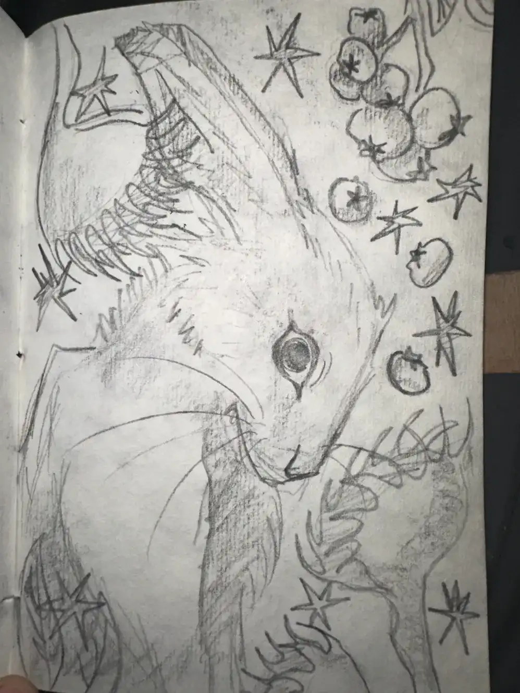
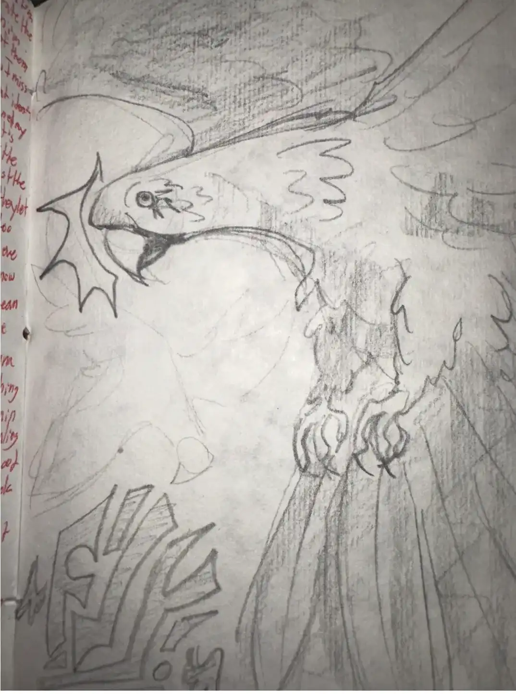
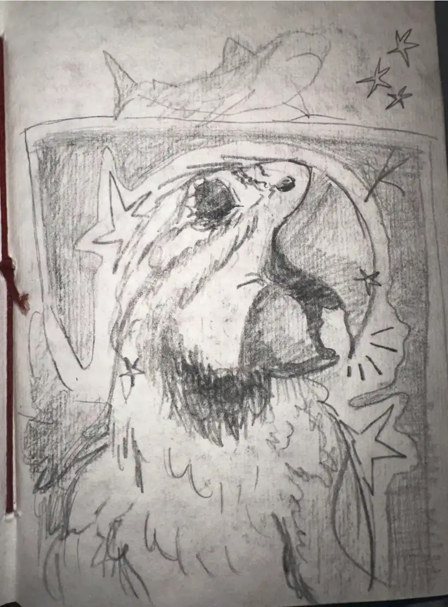
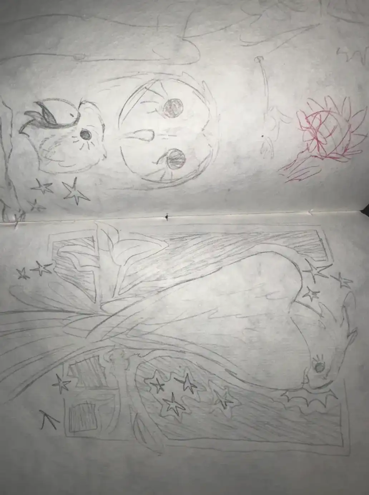
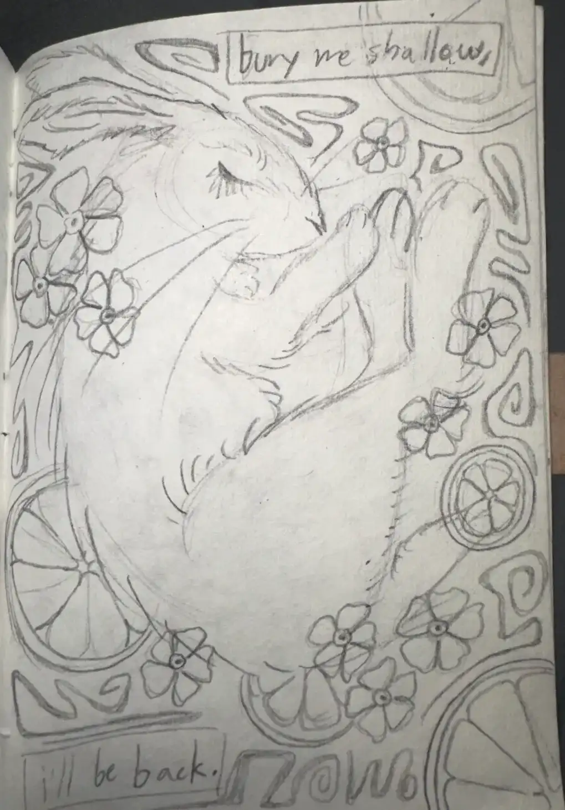
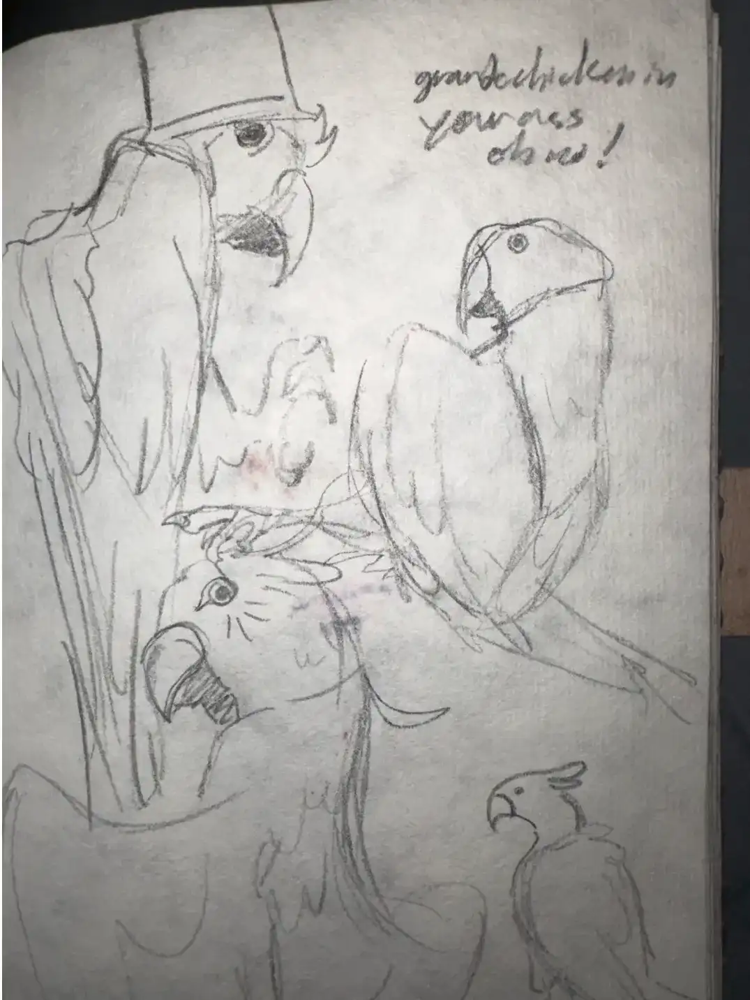
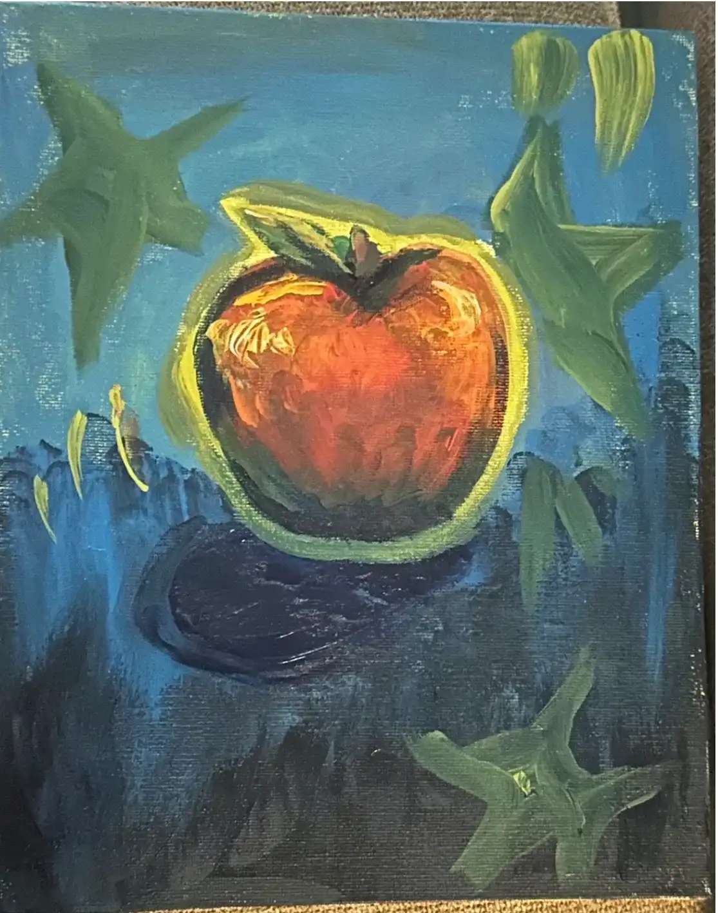

sardine’s sketchbook
trigger warnings:
mention of burial/death, close up of an eye
tags:
animals, birds, felines, hares, portrait, painting, sketches, charcoal, sharks, spider-sona







return to library